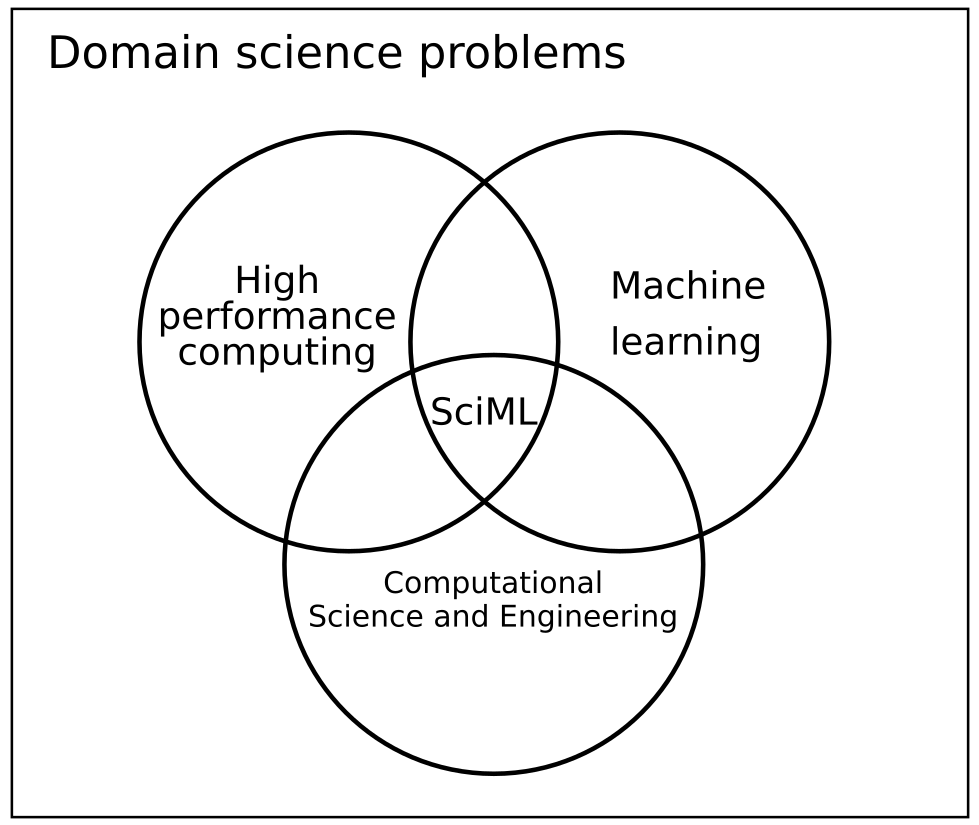

Our lab is located in the beautiful Westgate Building in Penn State University Park.
Welcome to the group page of the Interdisciplinary Scientific Computing Laboratory (ISCL)!.
ISCL performs research at the intersection of data science, applied mathematics, and high-performance computing to enhance the understanding of complex multifidelity and multiphysics phenomena in various applications. In other words - we create science-based AI algorithms for applications such as weather and climate modeling, disruption mitigation in nuclear fusion, data and model fusion for complex fluid flows, surrogate models for chaotic dynamical systems, and more.
ISCL is housed in the College of Information Sciences and Technology at Pennsylvania State University, as well as the Mathematics and Computer Science Division at Argonne National Laboratory. A high level overview of our research may be found in the following talks: [1], [2], [3], [4], [5], [6]. Further information about publications can be found on Google Scholar and our software contributions are available on Github. ISCL has access to multiple HPC resources such as Bebop/Swing/Polaris (at Argonne), Roar (Penn State), and Perlmutter (NERSC).
ISCL eagerly welcomes possibilities for education, collaboration, and consulting! Feel free to reach out to us for any questions.
News
Romit presents a Keynote talk at NCAR ISS 2025 related to DeepHyper! Learn more here.
Two new publications by ISCL! Zach Malik leads a paper on data assimilation for chaotic systems (in CMAME) and Ashish Nair/Shivam Barwey lead a paper on the analysis of neural ordinary differential equations embedded in the latent space of autoencoders (in Physica D). Congratulations!
Announcing a new preprint on interpretable reinforcement learning led by Xuyang Li. We identify a latent space for actions of an RL agent for linear stability analyses. Read more here.
Announcing a new preprint on improved machine learning based predictions for chaotic dynamical systems led by Dibyajyoti Chakraborty. We simply use a novel loss formulation that can convert any ordinary neural architecture to one that can make improved predictions for chaotic multiscale systems such as turbulent flows. Read more here. This work was in collaboration with Arvind Mohan at Los Alamos National Laboratory.
Pleased to announce a new paper with Varun Shankar, Dibyajyoti Chakraborty, and Venkat Vishwanathan in Physical Review Fluids. We demonstrate how differentiable programming leads to improved closures for the large eddy simulation of turbulence. Read more here.

The research manifesto of the interdisciplinary scientific computing group.
Grand challenge problems
Improving geophysical forecast models with data science. We are building models to forecast variables using scientific machine learning. (credit Troy Arcomano - collaborator).
Tokamak disruption mitigation for nuclear fusion (image taken from Boozer et al., 2012). We are building closures and surrogate models to accelerate the computation of complex nuclear fusion reactors (i.e., system level simulations).
Scientific ML algorithm development
An algorithm that builds deep learning function approximation for sparse, unstructured, and time-varying observations (Nature Machine Intelligence 3 (11), 945-951, 2021).
A novel graph neural network architecture that not only makes predictions but also identifies salient physical features in an interpretable latent space (credit Shivam Barwey - postdoc).
Applied machine learning
Building a wind-turbine wake model for on-shore wind farms in the Texas panhandle using LIDAR and meteorological data (Neural Computing and Applications 34 (8), 6171-6186, 2022).
Characterizing the schooling of fish using generative machine learning. Here, the variation in the density of fish is captured by an optimal transport based forecast model (credit Jonah Botvinick-Greenhouse - visiting graduate student).
High performance heterogeneous computing
Building a scalable and reproducible ecosystem for scientific machine learning research (Journal of Computational Science 62 (2022): 101750).